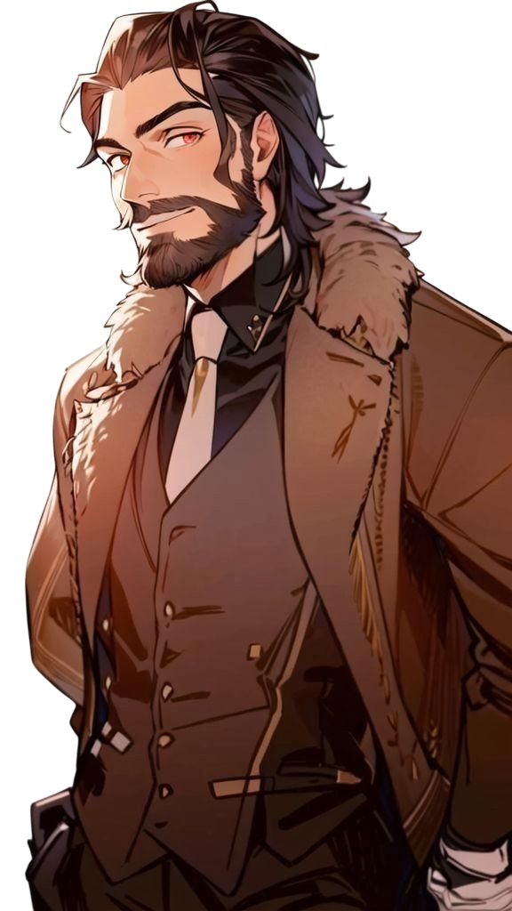
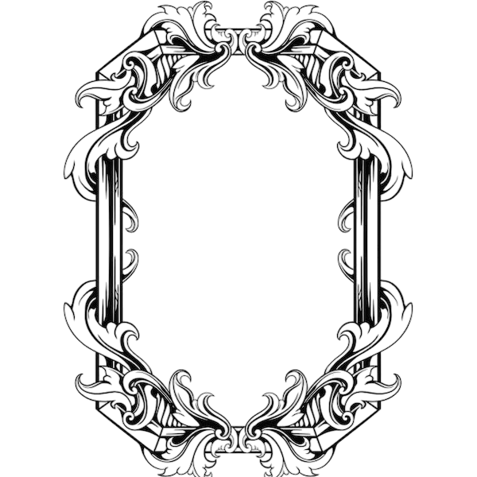
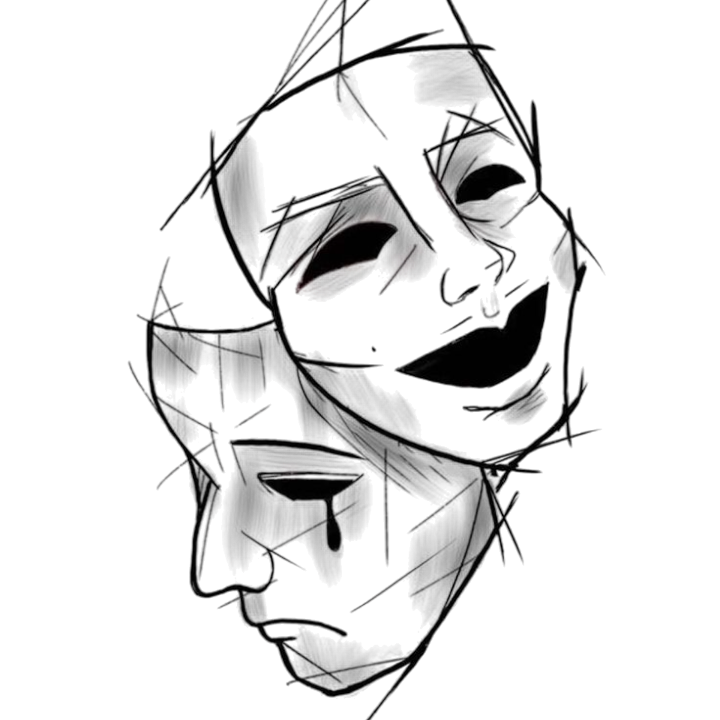
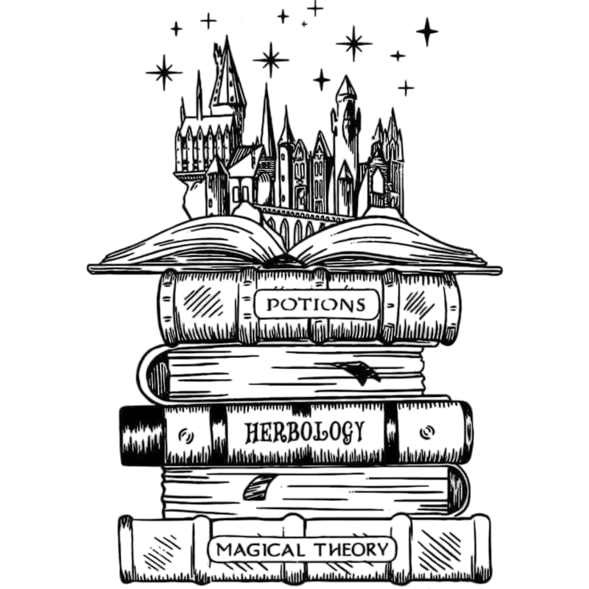
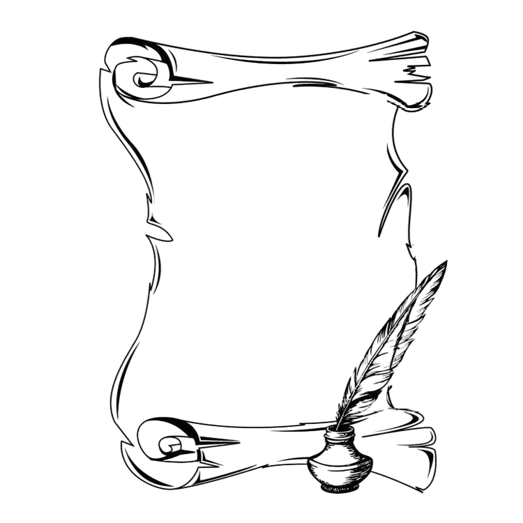
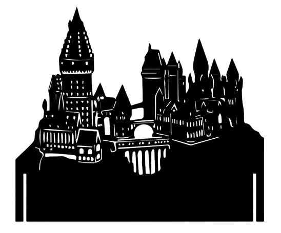
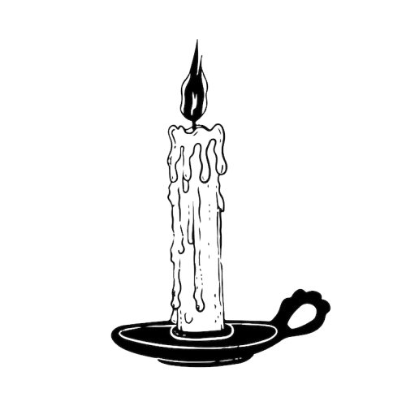
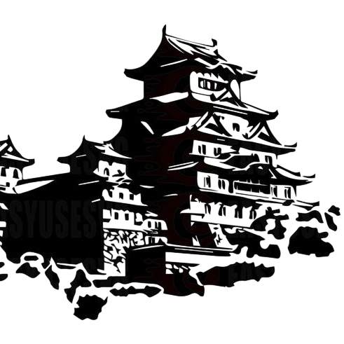

Afin de faciliter la compréhension de l'arborescence de cette famille, Veuillez cliquer sur l'image pour accéder à l'arbre généalogique de la famille Hogoki.

Nom : Hogoki.
Prénom : Olivier.
Origines Anglo-Japonais.
Age : 38 Ans.
Date de Naissance : 25 Aout 1987.
Matières : Etude des Moldu / SCM / Sortilèges .
Bois de Baguette : Bois de Houx.
Coeur de Baguette : Ventricule de Dragon.
Taille de Baguette : 27.8 cm.
Rigidité de Baguette : Rigide.

Apparence Physique :
Il arbore des cheveux noirs mi-longs qu'il coiffe principalement en arrière, une barbe soignée, et des yeux perçants d'une couleur marron légèrement rouge.
Il mesure 1m85 pour une carrure à épaules larges mais toujours d'un air détendu.
Il s'habille essentiellement de manière simple, confortable mais avec une pointe d'élégance, estimant qu'un professeur se doit d'avoir une certaine prestance devant ses élèves sans pour autant les effrayer.

Personnalité :
C’est un homme ouvert d’esprit, chaleureux et attentif aux besoins de ses élèves. Très apprécié pour sa capacité d’écoute, il instaure aisément un climat de confiance en classe.
À la fois flexible et rigoureux, il exige un certain sérieux tout en permettant régulièrement à ses élèves des moments de détente.
Doté d'un côté taquin, il aime glisser de temps en temps une petite plaisanterie pour détendre l’atmosphère et rendre les situations plus agréables.
Philosophe dans l’âme, il privilégie les discussions approfondies et respectueuses, stimulant ainsi la réflexion et l’ouverture d'esprit.
Protecteur, le bien-être et la sécurité de ses élèves sont sa priorité absolue.
Tourné vers l'avenir, il ne cachera pas ses espoirs qu'il a en ses élèvres. Ils sont l'avenir de la communauté magique comme il répète souvent.
Il sait néanmoins faire preuve de fermeté quand il le faut, considérant les punitions comme un moyen nécessaire mais juste pour faire comprendre aux élèves leurs erreurs, sans toutefois jamais en abuser.

Compétences :
- Autoritaire. Il sait s'imposer aurpès des récalcitrants et leur faire comprendre leurs erreurs.
- Juste. Il ne préviligie personne et applique des sanctions adéquates.
- Adaptable. Il adapte sa méthodologie selon la personne. Et peut aussi dépanner ses collègues en cas de besoin.
- Ouvert d'esprit. Il est ouvert à la critique et l'argumentation. Apprenant plus de ses erreurs que de ses victoires.
- Attentif. Il saura offrir une oreille attentive à ses élèves qui pourraient avoir besoin de parler.

Objectifs :
- Offrir un environnement saint et adéquate à l'apprentissage et l'épanouissement des élèves.
- Apporter une aide quelle qu'elle soit à ses collègues ainsi que ses élèves.
- Offrir un soutient moral en ces temps troublés.
- Maintenir une discipline efficace dans la maison dont il s'occupera.

Histoire :
Cette histoire possède un passé. Vous la trouverez dans la section concernant "L'ancêtre".
Olivier est né au sein d'une famille Moldu modeste. Son père Masade Hogoki, était menuiser dans l'entreprise de son beau-père. La mère d'Olivier, s'occuper de l'administration de cette même entreprise.
Elle pouvait travailler à domicile, étant une entreprise familliale, et ainsi prendre soin et élever le jeune Olivier.
L'enfance qu'il eut fut des plus simples. Il fut envoyé dans une école Moldu où il réussit à se faire quelques amis sans s'attirer de soucis.
Entre petites bêtises et bon retour des professeurs, les parents n'avaient aucunement à se plaindre de leur enfant.
Son père lui enseignait très tot l'importance de l'entraide, que tout effort est récompensé et surtout que le respect se doit d'être dans les deux sens.
Sa mère quant elle, de part cet amour maternel très présente chez elle, enseigna la compassion , la patience et l'écoute.
Ainsi que son petit humour bien à elle dont Olivier n'eut aucun mal à perpétuer les soupirs du Père à cause de ces blagues.

Du haut de ses 5 ans, Olivier eut une petite soeur. Jane. Et le jeune Garçon se jura alors de protéger et chérir cette petite soeur qu'il avait longtemps attendu !
Leur enfance ensemble connu des hauts et des bas, des complicités et des disputes. Une vie de frère et soeur très banale en soit.
Cependant, plus les année passèrent , et plus Olivier se sentait... différent. Le premier signe de cette différence fut lors d'une nuit d'orage.
Sa petite soeur, apeurée par les éclairs et le tonnerre, devait subir une panne de courant et donc un noir total dans la chambre d'enfant.
Olivier, n'aimant point voir sa jeune soeur ainsi pleurer, ne savant pas quoi faire, il en était très frustré.
Et, sans même en comprendre la raison, la bougie présente sur leur table de cheveux s'alluma toute seule.
Il ne comprit pas comment cela était arrivé, mais pour sa petite soeur, cela l'aidait déjà à se sentir mieux.
Après ce signe, plusieurs choses anormales arrivèrent. Des portes qui se claquent sous la colère, les lacets de ceux qui l'embêtent qui se croisent pour qu'ils tombent, des objets qui se déplacent ou tombent tout seul...
Autant dire que plus le temps passait, plus le jeune Olivier se demandait ce qui clochait... et surtout pourquoi tout cela n'arrivait qu'autour de lui.
Mais toutes ces questions et craintes trouvèrent leur réponse un jour d'Aout 1998. Quelques jours avant son onzième anniversaire.

Suite en cours-
Retour